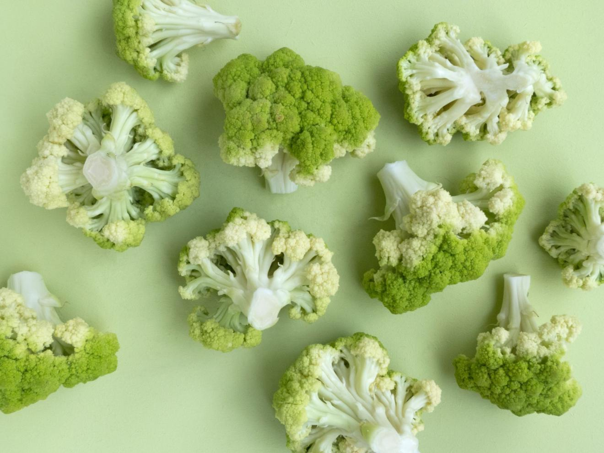

You Should Eat More Vegetables

Eat Your Vegetables!~ Moms everywhere, since the dawn of time…
Mom, isn’t always right, but in this instance, she is.
I don’t know why it took me so long to finish an article on vegetables, as next to protein intake, I feel this is the one diet fix nearly everyone could and should make.
I realize that telling you to eat MORE of something, seems contradictory to some. If a negative energy balance is a requirement for weight loss — I don’t only work with people seeking that by the way ;-) — then eating more of something sounds like it would put you over your requirements.
However, like protein, vegetables do a lot of the same sorts of things, maybe even more, and far more people don’t get enough.
In the case of protein, there were a bunch of reasons to eat more. Namely that it prevents you from eating other lower spectrum foods via displacement, so it actually moderates your overall energy intake, even though you’re eating more of something.
Well to be honest, veggies are sort of the same, only different…
And yes I realize that is a picture of a tomato and that a tomato is technically a fruit, but it behaves like a vegetable in the diet (low sugar) and we made salsa once from a bunch of Roma tomatoes and this one was waving at me.
Let’s cut to the chase. Yes, I’m punny.
You’re Probably Deficient
According to the Center for Disease Control and Prevention (CDC) less than 14% of the population meets the recommended amount of vegetable intake in the United States.
14%!!!!
And the most consumed ‘vegetable’ appears to be potatoes by the way. Not that many of us would find that surprising, but it’s probably indicative of the number of french fries (or something similar) the majority of the population eats. Even if they are anywhere near the recommendations.
This means that the overwhelming majority of people don’t get the recommended 5 servings a day. I’ll get to what constitutes a serving soon.
While it might not be as bad in other developed countries it’s still generally not that great (Australia does the best job…) because vegetables are rich in many of the vitamins and minerals that lots of people are also deficient in.
There is a very obvious relationship between the lack of vegetable consumption and a lack of people meeting the recommended daily intakes (RDI) for a variety of vitamins and minerals.
According to the USDA, the U.S. population is likely not meeting the RDI for the following:
- Vitamin E – 86%
- Folate (AKA Vitamin B9) – 75%
- Calcium – 73%
- Magnesium – 68%
- Vitamin A – 55%
- Vitamin C – 48%
- Zinc – 42%
- Vitamin B6 – 35%
- Iron – 34% (Particularly Women)
- Copper – 31%
- Vitamin B12 – 30%
- Thiamine (AKA Vitamin B1) – 28%
- Niacin (AKA Vitamin B3) – 24%
- Riboflavin (AKA Vitamin B2) – 22%
- Phosphorus – 21%
- Selenium – 15% (Particularly Men)
(Source: United States Department of Agriculture: 2009)
Note:Of course, that’s assuming that RDI’s are 100% correct (and they very well are not), but as minimums go they’re the best we’ve got at the moment. Note that RDI’s don’t necessarily mean that you have to be getting all of these things in that specific quantity each day as most vitamins/minerals are stored, so long as overall you hit roughly these numbers in the diet. Don’t get neurotic about them. Also note that ‘more is not necessarily better,’ as many vitamins and minerals have toxicity upper limits that can be problematic (though many are just excreted by the body when taken in excess too). RDI’s are not generally listed for the size of an individual but you may need more of things if you’re bigger and less of something if you’re smaller too. Just a few things to keep in mind…
Most of these nutrients save the B12 and Zinc, are found in relative abundance in the vegetable world:
- 1 cup of Spinach 4-8 mg of Vitamin E (roughly 30% of RDI – 20.1 mg)
- 4 spears of Asparagus 128-141 mcg of Folate (roughly 34% of RDI – 400 mcg)
- 1/2 cup of frozen Collard Greens 189 mg of Calcium (roughly 19% of RDI – 1000 mg)
- 1/2 cup of Swiss Chard 80 mg of Magnesium (roughly 20% of RDI – 400 mg)
- 1 medium Carrot (60g) 509 mcg of Vitamin A (roughly 57% of RDI – 900 mcg)
- 1/2 cup of Green Peppers 63 mg of Vitamin C (roughly 105% of RDI – 60 mg) — I’m shocked Vitamin C is on the above list as it seems very easy to get…
- 1 medium Potato (*with skin) 0.37-0.6 mg of B6 (roughly 25% of RDI – 2mg)
- 1/2 cup of cooked Spinach 2-3.4 mg of Iron (roughly 15% of RDI – 18 mg)
- 1/2 cup of Shitake Mushrooms (technically a fungi) 650 mcg of Copper (roughly 33% of RDI – 2000 mcg)
- 1/2 cup of Acorn Squash 180 mcg Vitamin B1 (roughly 12% of RDI – 1500 mg)
- 1/2 cup of Portobello Mushrooms 6 mg Vitamin B3 (roughly 30% of RDI – 20 mg ) — Niacin is a tricky micronutrient because of the association with Tryptophan but that’s way more complicated than I want to get into…
- 1/2 cup of Mushrooms 0.2-0.6 mg Vitamin B2 (roughly 24% of RDI – 1.7 mg)
- 1 medium Potato (*with skin) 130 mg of Phosphorus (roughly 13% of RDI – 1000 mg)
- 1/2 cup of Mushrooms 10-21 mcg of Selenium (roughly 25% of RDI – 70 mcg)
(Source: Mostly the Registered Dieticians of Canada database on Minerals and Vitamins)
Sure there are better sources for some of these from legumes, grains, dairy and animal products, but the above is not bad for just vegetables. Note that mushrooms and leafy greens do particularly well…just saying…
Truth be told, many of you just skimmed that and I’m generally not a fan of throwing numbers like this on micro-nutrition out at people, but I feel it illustrates another point:
Though eating 5 servings a day is an excellent starting point, making sure you get a variety of vegetables throughout the week is the next important step as that provides the best nutrient distribution in the diet.
In other words, focus on the vegetables themselves, rather than all these vitamins and minerals and you’re likely to get a good result.
Vegetable Fiber
Missing from the above is another nutrient that doesn’t fall into the Vitamin/Mineral category but nonetheless is worth mentioning because frankly most of you also don’t get enough either.
FIBER
I don’t want to make this article about fiber, hopefully I’ll get around to that article someday but the DRI of fiber is roughly 25 grams for women and 38 grams for young men.
Why the discrepancy?
Well fiber intake is probably best based on total calorie intake, and men typically need more food in general based on size.
A better way to look at fiber intake is roughly 11-13 grams per 1000 kcal in your diet. Meaning if you eat 2000 kcal, then 22-26 grams is about right. If you eat 3000 kcal, then 33-39 grams is about right. Make sense?
Note:Again you should consider the fact that while fiber is often touted as a miracle nutrient, like so many other things, more is not necessarily better. Too little definitely isn’t good, but loading up on psyllium fiber supplements every day to get absurd amounts in your diet probably isn’t desirable. You may find yourself in the middle of a crappy situation with too much in the diet. Still punny. Shooting for at least the numbers above are probably about right for most folks.
Again, according to the USDA most of us still don’t get enough. Women get about 7-10 grams per 1000 kcal, while men only manage 7-9 grams. This works out about about women getting only 13-16 grams a day and men only 16-20 grams a day. Dudes, seriously, it’s not feminine to eat foods that aren’t meat.
Yet again, we see that most people fail to meet minimums — another reason to consume your whole grain starchy carbohydrates too — and vegetables provide a good amount of it, especially relative to calorie intake:
- 1/2 cup Artichokes = 7.2 grams of fiber
- 1/2 cup chopped Collard Greens = 3.8 grams
- 1/2 cup Parsnip = 2.8 grams
- 1/2 cup Sweet Potato = 3.3 grams
- 1/2 cup Broccoli = 2.6 grams
- 1/2 cup Squash = 3.3 grams
- 1/2 cup chopped Onion = 1.75 grams
- 1/2 cup Eggplant = 1.5 grams
- And well you get the idea…
Keep in mind that 1/2 a cup isn’t necessarily a full ‘serving’ and you can quickly see how even five half servings of vegetables easily bulk up your fiber intake.
Nature’s Medicine
By now, you can see that veggies are nutritional powerhouses, they contain vital minerals and vitamins.
They also contain many antioxidants and phytochemicals (like lycopene in tomatoes or lutein in spinach) that can subdue carcinogenic effects of other foods. No doubt you heard about the hoopla surrounding the World Health Organization and red meat consumption a few years back.
Well at least one study showed that 250 grams of brussel sprouts and broccoli lead to the increased excretion of carcinogenic compounds associated with red meat. Maybe the WHO ignored this? I dunno…
Proving once again that epidemiological (the study of disease) studies are incredibly difficult to rely on and account for multiple variables.
Is the WHO’s recommendation really about red meat consumption being bad, or the lack of vegetable consumption to go with the red meat consumption being the real issue? Who eats red meat every day anyway?
I don’t want to get into that much here but, it seems likely it’s multi-factoral and that increased vegetable consumption should accompany increased red meat consumption for optimum well-being.
We could go out on a limb and say that vegetable consumption has the potential to reduce risk from less optimal foods like those of the processed red meat or deep fried variety.
While we’re on the subject, really you should probably avoid crap like hot dogs and other overly processed red meat in particular. Those seem to be the worst offenders anyway.
Vegetables counteract these risks from a health perspective by reducing (often substantially) the risk of:
- Cancers (Prostate, breast, colon, ovarian, pancreatic, lung, you name it…)
- Obesity
- Osteoporosis (increased frailty of your bones…)
- Cardiovascular Heart Disease
- High blood cholesterol (especially high LDL)
- High blood pressure
- Age-related cognitive declines
- Strokes
- Type 2 diabetes
- Neurodegenerative disease
- If we kept going, we’d run out of room on this page…
Some experts predict that simply increasing vegetable intake, could prevent 20% or more of all cancer cases and avoid approximately 200,000 cancer-related deaths annually.
Nothing probably earth shatteringly new to you, right? But not too shabby either…
Vegetables are also alkaline producing — meaning they help preserve muscle and bone mass by offsetting the acidic effects of other foods like animal proteins and grains.
They can thus help you recover from strenuous exercise and help moderate stress responses (inflammation) in the body, especially chronic stress.
As a bonus, they contain a lot of water, contributing to hydration (believe it or not!)
Aside from the very positive benefits, eating veggies and fruits also help us lose fat and keep us lean, all thanks to something called “dietary displacement.” I discussed that in my protein article way back when already, so I won’t repeat myself.
In a nutshell, by eating more veggies, you displace other higher caloric foods from your diet. As a result you have to eat larger quantities of vegetables to get as many calories into your diet; This is simply just too difficult to do.
The by-product being less calories in, even though you’ll feel like you’re eating more by volume/weight.
Low calorie, high nutrient foods like vegetables fill your stomach to a greater extent, which is a trigger for satiation. This makes you feel fuller than easy to eat but high caloric, low nutrient density foods — think cakes/muffins/cookies/etc…
All-in-all, turns out your mother may have been right.
What to Do Now
First figure out roughly how many servings of vegetables in a day you actually eat. I recommend doing this via a food journal, food log or even an app like MyFitnessPal — though they don’t tell you how many actual servings of vegetables you eat in a day.
Simply record what you eat for 3 non-consecutive days. Make sure you get a weekend day in there because most of use change our eating habits from weekend to weekday.
Then look at how many vegetables you’ve eaten. To give you an idea of what constitutes a serving:
- 1 Cup of Broccoli, Carrots, Celery, Cabbage, Mushrooms, etc…
- 1 Cup of packed leafy greens (Kale, Spinach, Collards, etc…)
- 1/2 a large pepper, onion, potato, beet, tomato, etc… (1 medium sized or so)
A better way we like to track things is just with your fist like this:
That’s roughly a cup for most people. It will make your serving sizes a little more unique to you, and easier to track.
Just aim for a fistful as the equivalent of a serving of raw or cooked vegetables. Avoid deep fried vegetables, and don’t count things like french fries or chips — yes technically a serving of vegetables but the saturation of fat almost cancels out the benefit.
The photo above is a mix bag of roasted beets, onions, carrots, parsnips, mushrooms and herbs.
If in your self discovery you find that you eat 3 servings a day, you don’t have to jump to 5. Remember small wins. A small increase to 4, is still an improvement.
Meet yourself where you’re at. Just challenge yourself to do a bit better until you’ve set a new norm. Then challenge yourself again.
Keep working up until 5 fist sized servings of veggies is the new norm. Then let me know how it went in the comments.
Article credit: Skill Based Fitness / CC BY
Photo credit: Skill Based Fitness / CC BY
Cover photo: FOODISM360